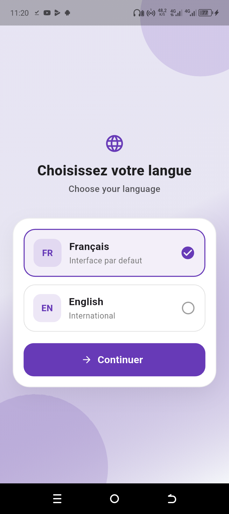
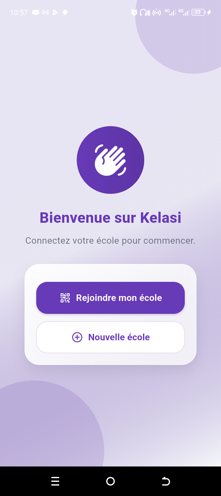
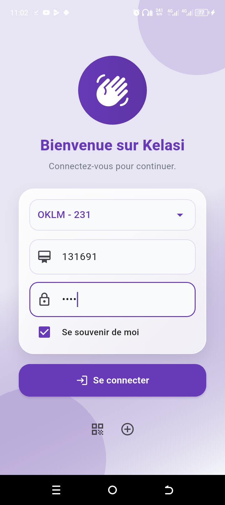
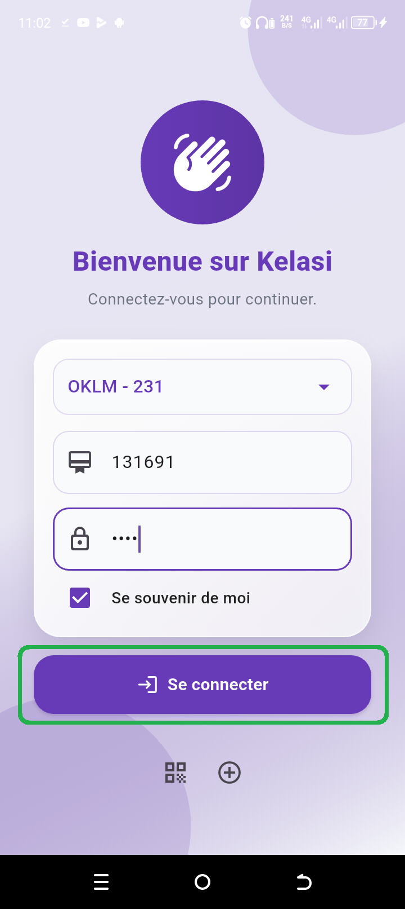

Connexion à l'école
Le test commence par le scan du QR code fourni. Ce QR code permet à l'application de charger les informations de l'école de démonstration avant toute connexion utilisateur.
Cette page explique la procédure officielle permettant de tester l'accès à l'application KELASI. Elle présente le vrai parcours d'entrée, sans modifier le fonctionnement réel de l'application mobile.
KELASI utilise d'abord un QR code d'école pour identifier l'établissement à charger, puis une connexion utilisateur classique avec matricule et mot de passe.
Le test commence par le scan du QR code fourni. Ce QR code permet à l'application de charger les informations de l'école de démonstration avant toute connexion utilisateur.
Une fois l'école chargée, l'utilisateur saisit son matricule et son mot de passe sur l'écran de connexion pour accéder à l'application.
Une connexion Internet est nécessaire pour récupérer les informations de l'école après le scan, puis l'accès se poursuit normalement dans l'application.
Suivez ces étapes dans l'ordre. Chaque carte reprend l'écran ou le visuel correspondant afin de rendre la procédure simple à reproduire sur un appareil réel.
Ouvrez l'application puis choisissez la langue souhaitée sur l'écran d'accueil.

Sur l'écran suivant, choisissez l'option permettant de scanner le code QR de l'école.

Scannez le code QR fourni pour charger les informations de l'école de démonstration.
Code QR officiel de démonstration KELASI
Après le scan, l'application récupère les informations de l'école via Internet.
Une fois les informations récupérées, la page de connexion s'affiche. Saisissez les identifiants de test.

Cliquez sur Se connecter pour accéder à l'application.

Une connexion Internet est requise pour récupérer les informations de l'école après le scan du QR code.
Le QR code doit être scanné avant la connexion utilisateur afin que l'application identifie d'abord l'école à charger.
Les identifiants fournis sur cette page sont destinés uniquement au test et à la démonstration officielle.